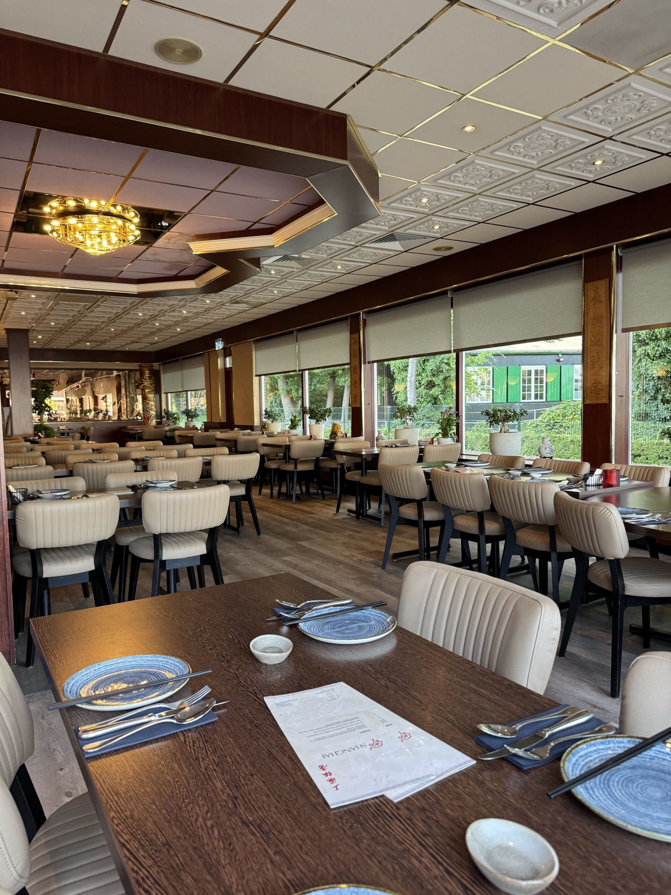

Asian tapas
Ontdek ons uitgebreide en diverse menu uit de Aziatische keuken, geserveerd volgens het shared-dining-principe. Per ronde bestelt u een aantal gerechten en wij bedienen alles aan tafel. Ook kunt u uw eigen oosterse gerecht samenstellen door uw vlees of vis te kiezen met uw gewenste saus, zo hoeft u het vertrouwde wokken niet te missen. Onbeperkt genieten van dranken en gerechten.
| 2 uur | 2,5 uur | 3 uur | |
|---|---|---|---|
| Volwassenen wo & do | € 38,95 | € 41,45 | € 43,95 |
| Volwassenen vr, za & zo | € 41,95 | € 44,45 | € 46,95 |
| Kinderen 3 t/m 11 jaar | € 20,50 | € 21,50 | € 22,50 |
- Verlenging per half uur: € 2,50 per volwassene, € 1 per kind. Na 2 uur wordt de tijd automatisch verlengd.
- Kinderen van 0 tot 2 jaar eten gratis, dranken worden apart verrekend.
- Onder dranken vallen frisdrank, wijn, bier, koffie en thee. Sterke dranken en likeuren zijn niet inbegrepen.
- Met feestdagen hanteren wij weekendprijzen, met uitzondering van de kerstdagen.
- Per ronde maximaal 2 gerechten per persoon, bijgerechten uitgezonderd. Om verspilling tegen te gaan: bestel graag alleen wat u op kunt. Restanten worden in rekening gebracht.